JS
JS组成部分
- ECMAscript：基本语法
- DOM：操作HTML
- BOM：操作浏览器
JS代码引入方式
- 内联式：标签里写JS代码
- 嵌入式：script标签里写
- 外部式：script标签里src引入
访问JS对象
- 方式：点号和中括号
- 区别：一是中括号可以操作特殊的属性名。二是中括号里面的属性名可以是一个变量，点号不支持变量。
- 判断属性是否在对象里：in操作符。语法：’属性名’**(一定要带引号)**/变量 in 对象
ES6新特性
块作用域(let\const)
类
箭头函数
模板字符串
对象字面量属性赋值简写
1
2
3
4
5
6
7
8
9
10
11
12
13var obj = {
// __proto__
__proto__: theProtoObj,
// Shorthand for ‘handler: handler’
handler,
// Method definitions
toString() {
// Super calls
return "d " + super.toString();
},
// Computed (dynamic) property names
[ 'prop_' + (() => 42)() ]: 42
}对象解构
Promise
Symbol
代理(proxy)
1
2
3
4
5
6
7
8
9
10
11
12
13
14
15
16
17
18// Proxy 对象用于创建一个对象的代理，从而实现基本操作的拦截和自定义（如属性查找、赋值、枚举、函数调用等）。
/*
参数：
target(要使用 Proxy 包装的目标对象)
handler(一个通常以函数作为属性的对象，各属性中的函数分别定义了在执行各种操作时代理 p 的行为。)
*/
var target = {};
var handler = {
get: function (obj, prop) {
return `Hello, ${prop}!`;
}
};
var p = new Proxy(target, handler);
console(p.c); //Hello, c
/*
可监听的操作： get、set、has、deleteProperty、apply、construct、getOwnPropertyDescriptor、defineProperty、getPrototypeOf、setPrototypeOf、enumerate、ownKeys、preventExtensions、isExtensible。
*/函数默认参数
1
2
3
4
5
6
7
8
9
10
11
12
13
14
15
16
17
18//Default
function findArtist(name='lu', age='26') {
...
}
//Rest
function f(x, ...y) {
// y is an Array
return x * y.length;
}
f(3, "hello", true) == 6
//Spread
function f(x, y, z) {
return x + y + z;
}
// Pass each elem of array as argument
f(...[1,2,3]) == 6rest
Map + Set + WeakMap + WeakSet
1
2
3
4
5
6
7
8
9
10
11
12
13WeakMap、WeakSet作为属性键的对象如果没有别的变量在引用它们，则会被回收释放掉。
Map原型中的方法有：get、has、keys、set、values
- get：返回key对应的value
- has：返回布尔值判断key是否在map中
- keys：返回迭代器，iter.next().value获取下一个key
- values：返回迭代器，iter.next().value获取下一个value
- set：添加键值对
Set原型中的方法有：add、has、keys、values
- has：返回布尔值判断对应的值是否在set中
- keys：values方法的别名
- values：返回迭代器，iter.next().value获取下一个valueiterators+for of
内置功能模块
1
2(1).具有CommonJS的精简语法、唯一导出出口(single exports)和循环依赖(cyclic dependencies)的特点。
(2).类似AMD，支持异步加载和可配置的模块加载。Math + Number + String + Array + Object APIs
严格模式
- 使用：在script标签或函数开头加上’use strict’;
- 必须用var声明变量；禁止自定义的函数中的this指向window；创建eval作用域；对象中的属性不能重名；
数据类型（八种）
基础数据类型：Boolean、Null、Undefined、Number、BigInt、String、Symbol
引用数据类型：Object
基础数据类型与引用数据类型的区别
拷贝:基本数据类型，设原值为a，拷贝后的值为b。则无论是单独修改a还是b，都不会改变另一个值。而引用数据类型，例如对象，设原对象为a，拷贝后的对象为b，则拷贝后修改a或b，另一个对象也会同时改变。比较:基本数据类型在比较的时候是比较值，而引用数据类型在比较的时候是比较地址。
typeof
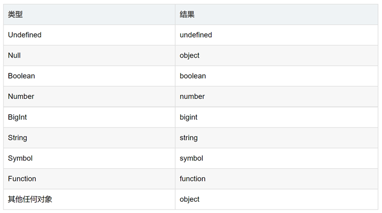
- typeof null = ‘object’
- typeof NaN = ‘number’
- typeof Object = ‘function’
instanceof
概念：检测构造函数的 prototype 属性是否出现在某个实例对象的原型链上
注意点：instanceof不能直接用于判断基本数据类型，但是可以直接判断引用数据类型
1 | console.log(2 instanceof Number); // false |
日期和时间
1 | - Date()：返回当日的日期和时间 |
arguments
特点
- 内置对象
- 有length，可以被遍历
- 是伪数组，无pop()、push()等数组方法
- 可以结合扩展运算符生成数组：[…arguments]
- 如果实参个数多于形参个数，则按照形参的个数进行匹配；如果实参个数小于形参个数，则多余的形参会是undefined，打印出来是NaN。
this绑定规则
- 默认绑定。非严格模式下，this指向window; 严格模式下，函数内部this指向undefined，函数外部不受影响。默认情况下，立即执行函数的this指向window。
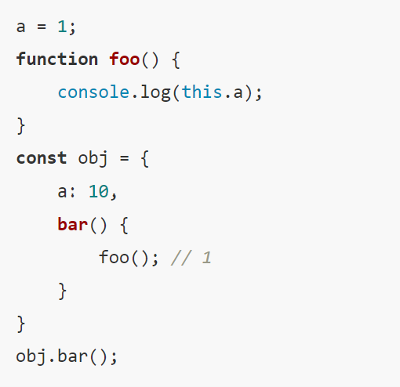
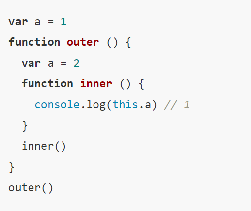
- 隐式绑定。函数调用是在某个对象上触发的，即调用位置存在上下文对象。类似于xxx.func()这种调用模式。如果存在xxx.yyy.zzz.func，此时this永远指向最后调用它的对象。
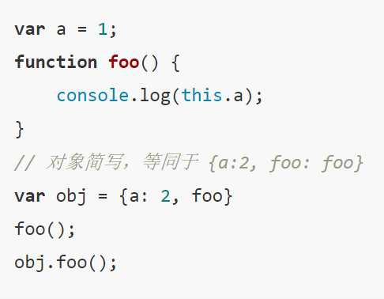
- 隐式绑定丢失。常见的两种丢失：a.使用另一个变量作为函数别名，之后使用别名执行函数；b.将函数作为参数传递时会被隐式赋值。此时，this的指向会启用默认绑定。如下输出2，1.
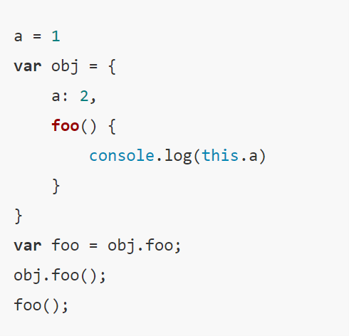
显式绑定。使用call\apply\bind强行改变this指向。Call和apply函数会立即执行；bind函数会返回新函数，不会立即执行函数；call和apply在于call接收若干参数，而apply接收数组。或者说bind只是改变了this指向，但是不会调用函数。
new绑定。以下输出zc 18。
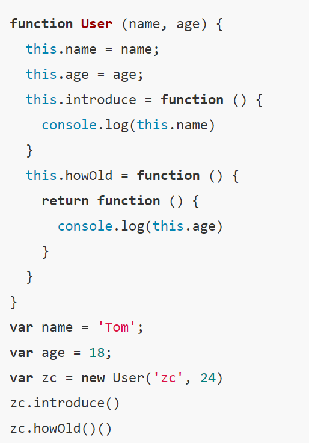
- 箭头函数。箭头函数没有自己的this，它的this指向外层作用域的this，且指向函数定义时的this而非执行时。
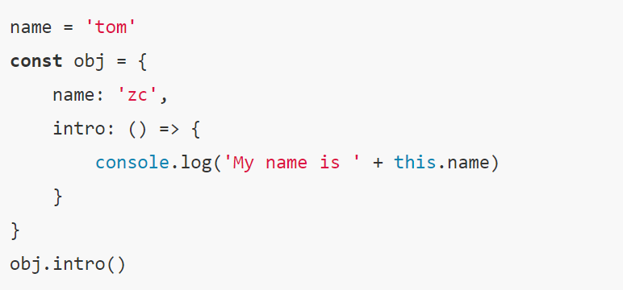
prototype
- 原型对象
每创建一个函数，解析器就会向函数中添加一个属性prototype。也就是说prototype只有函数对象上有。这个属性对应着一个对象，这个对象就是原型对象。如果函数以普通函数形式调用prototype则没有任何作用。当函数以构造函数的形式调用时，它所创建的对象中都会有一个隐含的属性，指向该构造函数的原型对象，可以通过__proto__来访问该属性。
- 原型对象的特点
原型对象就相当于一个公共区域，所有同一个类的实例都可以访问到这个原型对象，可以将对象中共有的内容，统一设置到原型对象中。
当我们访问对象的一个属性或方法时，它会先在对象自身中寻找，如果有则直接使用，如果没有则会去原型对象中寻找，如果找到则直接使用。
使用in检查对象中是否存在某个属性时，如果对象中没有但是原型中有，也会返回true.可以使用对象的hasOwnProperty()来检查对象自身中是否含有该属性。Object对象的原型没有原型为null。
__proto__、prototype、constructor
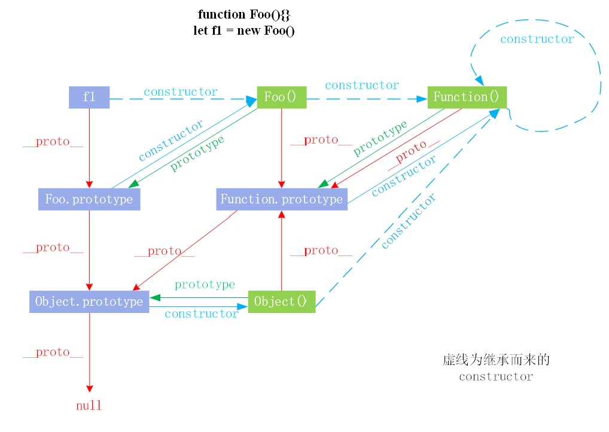
- 获得原型的方法
f1.__proto__- Foo.prototype
- f1.constructor.prototype
- Object.getPrototypeOf(f1)
箭头函数
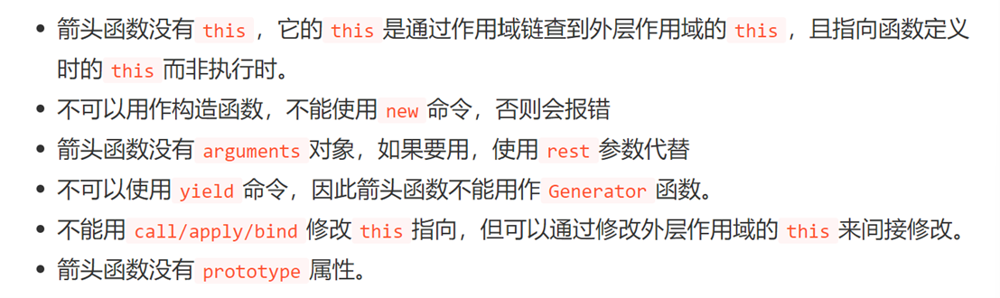
模块化
- 模块化的目的
- 解决命名冲突
- 提高复用性
- 提高代码可维护性
- 整体理解
模块是实现一个特定功能的一组方法
- 模块的几种形式
- 将函数作为模块。由于函数具有独立作用域，故可将函数作为模块。几个函数作为一个模块，但这种方式容易导致全局变量的污染，并且模块之间没有关系。
- 对象的写法。可以解决将函数作为模块的某些缺陷，但是这种方法会暴露所有的模块成员，外部代码可以修改内部属性的值。
- 立即执行的匿名函数。利用闭包来实现模块私有作用域的建立，同时不会对全局作用域造成污染。
- 模块规范
- commonJS。通过require来引入模块，通过module.exports定义模块的输出接口。这种模块加载方案是服务器端的解决方案，以同步的方式来引入模块的。在服务器端，文件都存储在本地磁盘，读取比较快，以同步的方式加载没有问题。在浏览器端，模块加载需要使用网络请求，故使用异步加载方式更合适。
- AMD。异步加载模块。AMD在模块加载完成后就会执行该模块，等所有模块加载完成后就会进入require的回调函数。模块的加载不影响后面语句的执行，所有依赖这个模块的语句都定义在一个回调函数里，等加载完成后再执行回调函数。require.js实现了AMD规范。
- CMD。异步加载模块。sea.js实现了CMD规范。它和require.js的区别在于模块定义时对依赖的处理不同和对依赖模块的执行时机的处理不同。
- ES6方案。import 和export导入导出模块。
- export
- 默认导出：export default Person
- 按需导出：export {age, name, sex}
- 混合导出：export default和export可以同时使用不影响
- 默认导入：import Person from ‘person’
- 按需导入：import {age, sex, name} from ‘person’
- 混合导入：必须先导入默认导出的，再导入单个导入值
- AMD和CMD的区别
- 模块定义时对依赖的处理不同。AMD依赖前置，在定义模块的时候就要声明其依赖的模块。而CMD就近依赖，只有在用到某个模块的时候再去require。
- 对依赖模块的执行时机不同。AMD和CMD都是异步加载。但是AMD在依赖模块加载完成后就直接执行依赖模块，依赖模块的执行顺序和书写顺序不一定一致。而CMD在依赖模块加载完成后并不执行，等到所有的依赖模块都加载好之后，进入回调函数逻辑，遇到require语句的时候才执行对应的模块。模块的执行顺序和书写顺序一致。
WeakMap
概念：是一组键/值对的集合，其中的键是弱引用。其键必须是对象，而值可以是任意的。一个对象如果被弱引用所引用，则被认为是不可访问的，并在任何时刻都能被回收。
强引用与弱引用：默认创建的为强引用，只有手动置为null才会被垃圾回收机制进行回收。而弱引用则会被垃圾回收机制自动回收。
async / await
- async函数返回Promise对象，必须等到内部所有的await命令的Promise对象执行完，才会发生状态改变。
- await表达式：await右侧的表达式一般为promise对象，但也可以是其他值。如果表达式是promise对象，await返回的是promise成功的值。如果表达式是其他值，直接将此值作为await的返回值。
- 当async函数中有一个await出现rejectd状态时，后面的await都不会执行。可以通过添加try/catch。
undefined、undeclared、null
- undefined表示已在作用域中声明但还没有赋值的变量
- undeclared表示未在作用域中声明的变量
- null表示空对象，主要赋值给一些可能会返回对象的变量，作为初始化
作用域和作用域链
- 作用域
- 概念：作用域是定义变量的区域，它有一套访问变量的规则，这套规则用来管理浏览器引擎如何在当前作用域以及嵌套的作用域中根据变量进行变量查找。
- 分类：ES6之前只有全局作用域和函数作用域，ES6之后新增块级作用域(let\const)。
- 作用域链
- 概念：在作用域的多层嵌套中查找自由变量的过程是作用域链的访问机制。层层嵌套的作用域，通过访问自由变量形成的关系叫做作用域链。
- 本质：指向变量对象的指针列表。变量对象是一个包含执行环境中所有变量和函数的对象。作用域链的前端始终是当前执行上下文的变量对象，全局执行上下文的变量对象始终是作用域链的最后一个对象。
String的原生方法
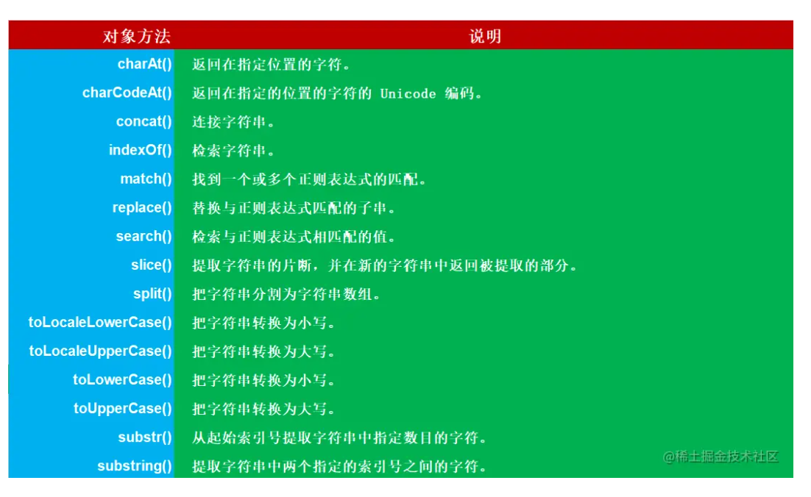
正则表达式
- 边界
| ^ | 开头 |
|---|---|
| $ | 结尾 |
| \b | 边界 |
| \B | 与\b相反 |
| (?=p) | 符合p子模式前面的那个位置 |
| (?!p) | (?=p)匹配到的位置之外的位置都是属于(?!p) |
| (?<=p) | 符合p后面的那个位置 |
| (?<!p) | (?<=p)之外的所有位置 |
- 量词
| {m,} | 至少出现m次 |
|---|---|
| {m} | 出现m次 |
| ? | 出现0次或者1次 |
| + | 至少出现1次 |
| * | 出现0次或多次 |
- 常用
| \w | 字符 |
|---|---|
| \d | 数字 |
- 修饰符
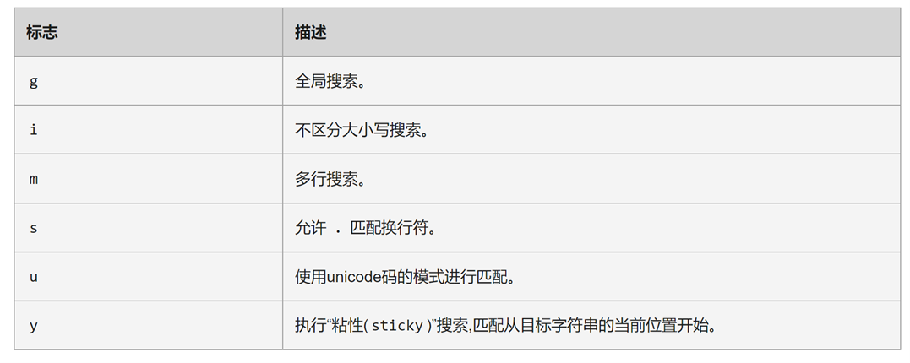
JS延迟加载的方式
- JS加载、解析和执行都会阻塞页面渲染
- 将JS脚本放在文档的底部，来使JS脚本尽可能的在最后来加载执行
- 给JS脚本添加defer属性，这个属性会让脚本的加载与文档的解析同步解析，然后在文档解析完成后再执行这个脚本文件，这样的话就能使页面的渲染不被阻塞了。多个设置了defer属性的脚本按规范来说最后是顺序执行的。
- 给JS脚本添加async属性，这个属性会使脚本异步加载，不会阻塞页面的解析过程，但是当脚本加载完成后立即执行JS脚本，如果这个时候文档没有解析完成的话同样会阻塞。多个async属性的脚本的执行顺序不可预测。
- 动态创建DOM标签的方式。可以对文档的加载事件进行监听，当文档加载完成后再动态的创建script标签来引入JS脚本。
JS运行机制
- JS单线程
- 概念：同一时间只能做一件事。js单线程主要与它的用途有关。它主要用途是与用户交互，以及操作DOM。使用单线程能够消除同步问题。
- JS事件循环
- 任务分类：同步任务、异步任务
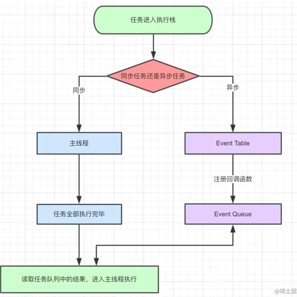
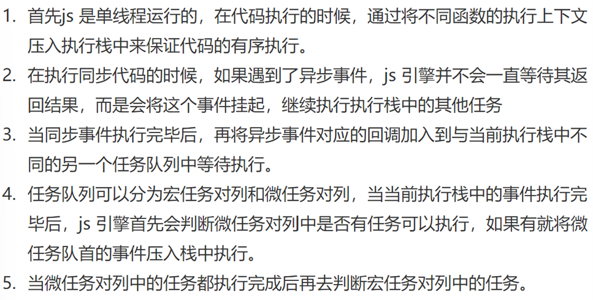
宏队列与微队列
- 概念：JS中用来存储执行回调函数的队列
- 宏队列：用来保存待执行的宏任务（回调），比如：定时器回调/DOM事件回调/AJAX回调
- 微队列：用来保存待执行的微任务（回调），比如：promise的回调/MutationObserver的回调
var \ let \ const区别
- var变量会挂载到window上，而let和const不会
- var声明变量存在变量提升，而let和const不会
- let和const形成块级作用域
- 同一作用域下let和const不能声明同名变量，而var可以
- let和const存在暂存死区，也就是在声明变量之前，该变量是不可用的。
Proxy
- 概念：在目标对象之前架设一层拦截，外界对该对象的访问，都必须先通过这层拦截。也就是提供了一种机制，可以对外界的访问进行过滤和改写。
1 | let validator = { |
Generator
概念：通过yield关键字，将函数的执行流挂起，通过next()方法可以切换到下一个状态，为改变执行流程提供了可能，从而为异步编程提供解决方案。
规则：yield表达式本身没有返回值，或者说总是返回undefined。next方法可以带一个参数，该参数就会被当作上一个yield表达式的返回值。
1 | //没明白 |
异步编程方式
- 回调函数
- 事件监听
- 发布 / 订阅
- Promise
setTimeout \ setInterval
定时器指定的时间间隔，表示的是何时将定时器的代码添加到消息队列，而不是何时执行代码。所以真正何时执行代码的时间是不能保证的，取决于何时被主线程的事件循环取到，并执行。每个setTimeout产生的任务会直接push到任务队列中；而setInterval在每次把任务push到任务队列前，都要进行一下判断(看上次的任务是否仍在队列中)。
闭包
- 概念
闭包就是能够读取其他函数内部变量的函数。例如在JS中，只有函数内部的子函数才能读取局部变量，所以闭包可以看成是一个函数内部的函数。本质上，闭包是将函数内部和函数外部连接起来的桥梁。闭包的特点：1.在函数外部操作读取了函数内部的值 2.闭包对应的函数中的变量是常驻内存的。闭包的条件：1.函数嵌套 2.子函数要使用函数内部的变量。
- 应用
- 作为缓存，第二次使用对象时候，可以不用新建对象。单例模式的实现等。
- 实现封装，对访问内容添加权限，实现类似private\protect\public的效果
- 缺点
闭包中的变量是常驻内存的，故其会造成内存泄漏。解决的方案：将外部调用闭包函数的变量最终赋值为null。
call \ apply
- call和apply方法都能执行函数，用法：函数名.call()或函数名.apply();
- call和apply的区别在于，call给函数传递值时是依次传递的，而apply给函数传递值时需要通过一个数组。
防抖与节流
- 防抖
- 概念：一个会频繁触发的函数，在规定的时间内，只让最后一次生效，前面的不生效。在事件被触发n秒后再执行回调，如果在这n秒内又被触发，则重新计时。
- 作用：防止用户重复操作
- 适用场景：用户点击事件
- 如果一直点击的话就不会被执行
- 节流
- 概念：一个函数执行一次后，只有大于设定的执行周期后，才会执行第二次。
- 作用：性能优化。比如有个需要频繁触发的函数，出于优化性能角度，在规定时间内，只让函数触发的第一次生效，后面不生效。通过节流函数，可以极大的减少函数执行的次数，从而节约性能。
- 常见的函数节流应用：oninput、onkeypress、onscroll、onresize等
Promise
- 作用
将异步操作以同步流程表达，避免回调地狱问题。Promise本质是状态机，通过设定不同的状态来执行不同的操作。
- 三个状态
初始化状态[pending]、成功状态[resolved]、失败状态[rejected]。状态只能改变一次，再次改变无效。
- promise.then()返回的新promise的结果状态由什么决定？
- 简单表达：由then()指定的回调函数执行的结果决定
- 详细表达：a.如果抛出异常，新promise变为rejected，reason为抛出的异常；b.如果返回的是非promise的任意值，新promise变为resolved，value为返回的值；c.如果返回的是另一个新promise，此promise的结果就会成为新promise的结果。
- promise串联多个操作任务
- 通过then的链式调用串联多个同步/异步任务
- 异步任务需要返回Promise对象，而同步任务可以直接返回
- promise异常穿透
- 当使用promise的then链式调用时，可以在最后指定失败的回调
- 前面任何操作出了异常，都会传到最后失败的回调处理
- 中断promise链
- 当使用promise的then链式调用时，在中间中断，不再调用后面的回调函数
- 方法：在回调函数返回一个pending状态的promise对象
- 回调地狱
回调函数获取异步操作的返回值的原理？回调函数作为实参传递给异步函数的形参，所以回调函数是在异步函数之内执行的，那么回调函数就可以获取异步操作的返回值。
什么是回调地狱？回调函数嵌套调用，外部回调函数异步执行的结果是嵌套的回调函数执行的条件。
回调地狱的缺点？不便于阅读/不便于异常处理。
==与===
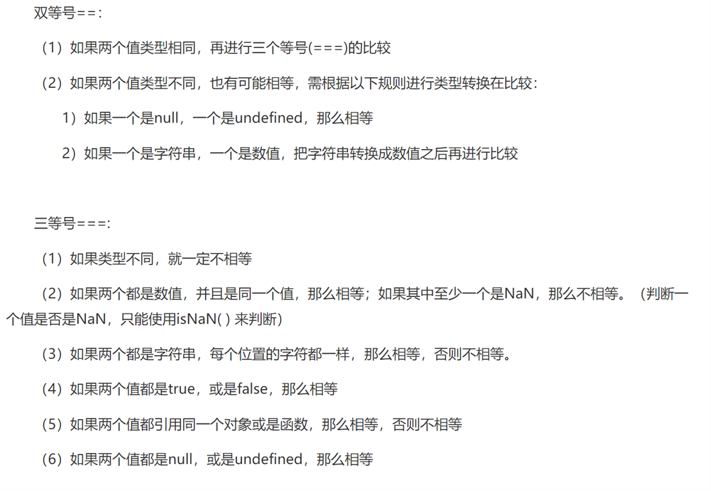
Symbol
- symbol 类型的值可以作为对象的属性标识符使用
- 创建一个 symbol 的值需要使用 Symbol() 函数，但不能使用 new 命令。
- Symbol() 方法每次都会创建一个新的值，且不会注册到全局。Symbol.for() 方法则会先查找命名参数是否在全局中注册过，如果注册过的就不会创建新的值，而是会直接返回，所以我们可以使用到相同的 symbol 值。
- Symbol.keyFor() 方法表示获取一个 symbol 的值在全局中注册的命名参数 key，只有使用 Symbol.for() 创建的值才会有注册的命名参数，使用 Symbol() 生成的值则没有。
- Symbol值作为对象属性名时，不能使用点运算符。因为点运算符后面总是字符串，所以不会读取Symbol作为标识名所指代的那个值，导致a的属性名实际上是一个字符串，而不是一个 Symbol 值。
JSON.stringfy()
| 原值 | 转换后的值 |
|---|---|
| NaN | null |
| Infinity | null |
| undefined | undefined |
| 任意函数 | undefined |
| symbol | undefined |
| 对象 | 字符串 |
| 布尔值、数字、字符串 | 原始值对应的字符串 |
数组方法
- splice
用于删除、添加数组元素，原数组会被修改，并且返回修改后的数组。
1 | var a = [1,2,3,4,5]; //定义数组 |
- slice
能够截取数组中指定区段的元素，并返回这个子数组,不会修改原数组。该方法包含两个参数，分别指定截取子数组的起始和结束位置的下标。
1 | //如果仅指定一个参数，则表示从该参数值指定的下标位置开始，截取到数组的尾部所有元素。 |
- push
- pop
- shift
- unshift
- sort
- concat
- reduce
用于累加数组
1 | Arr.reduce(callback, [initialValue]) |
JS全局函数
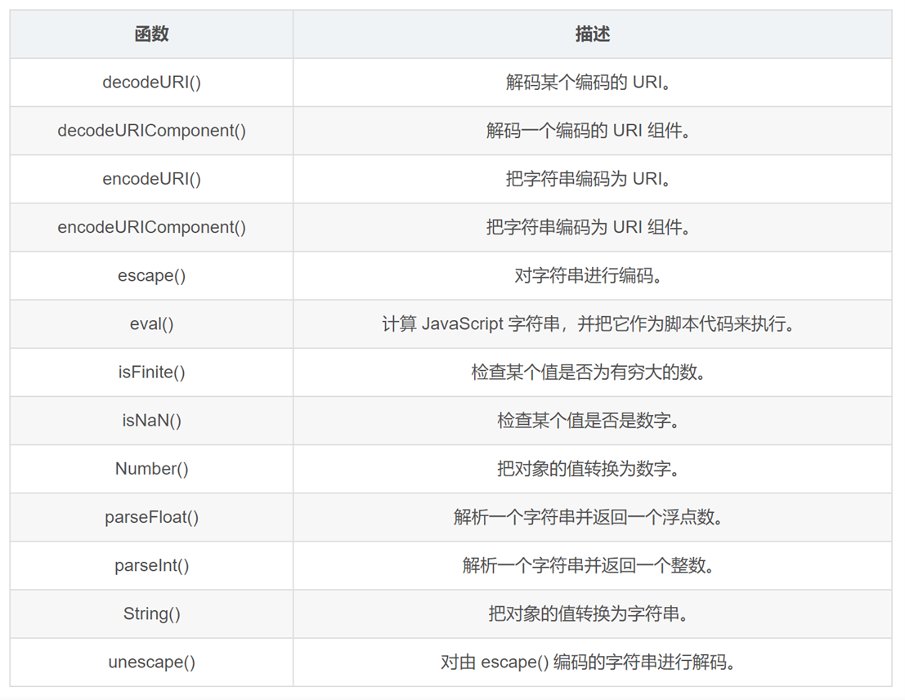